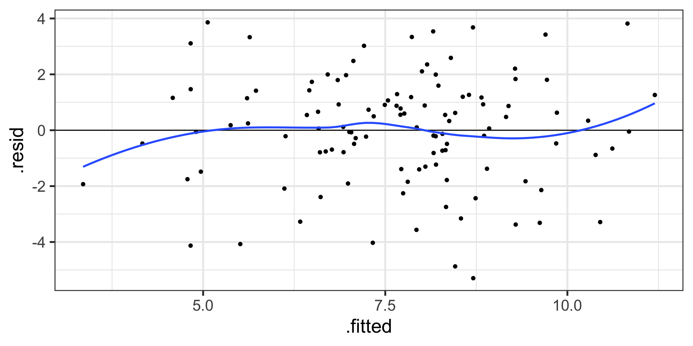
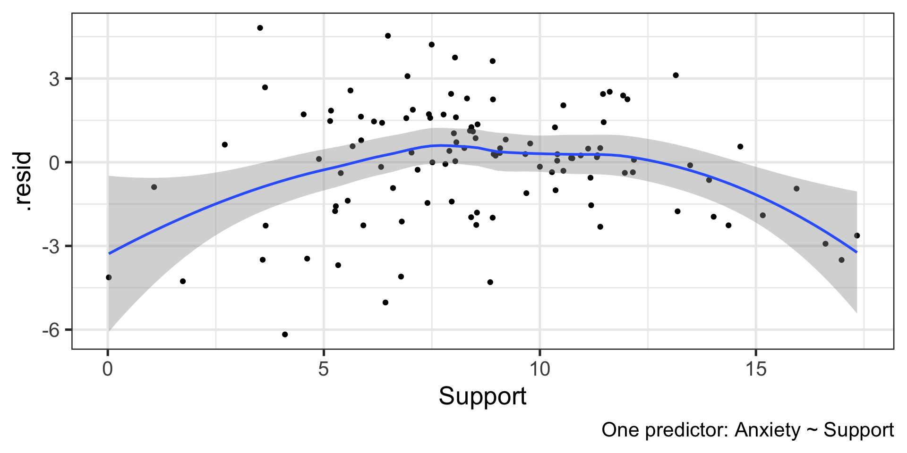
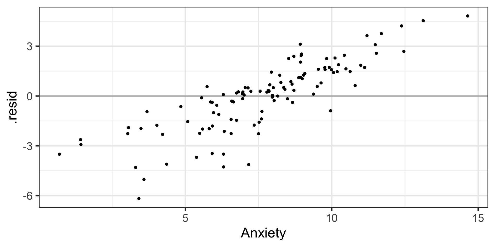
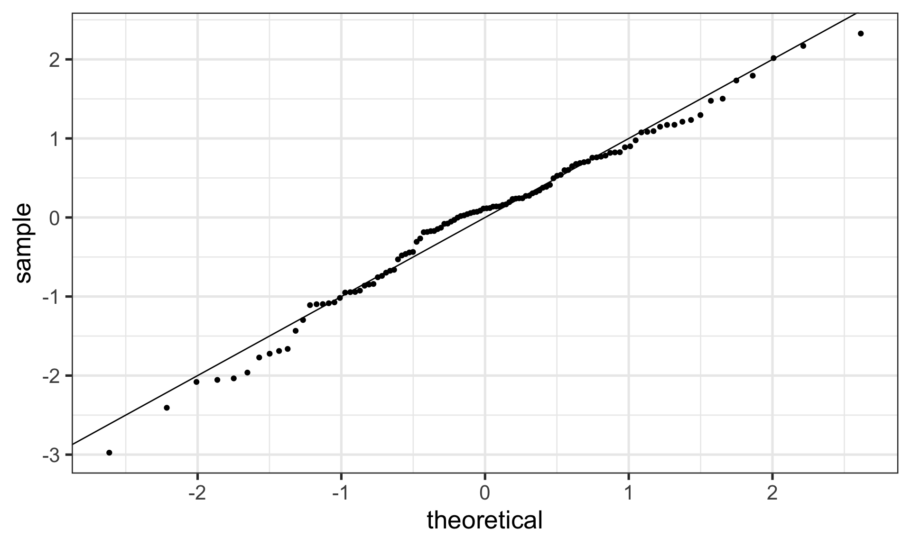
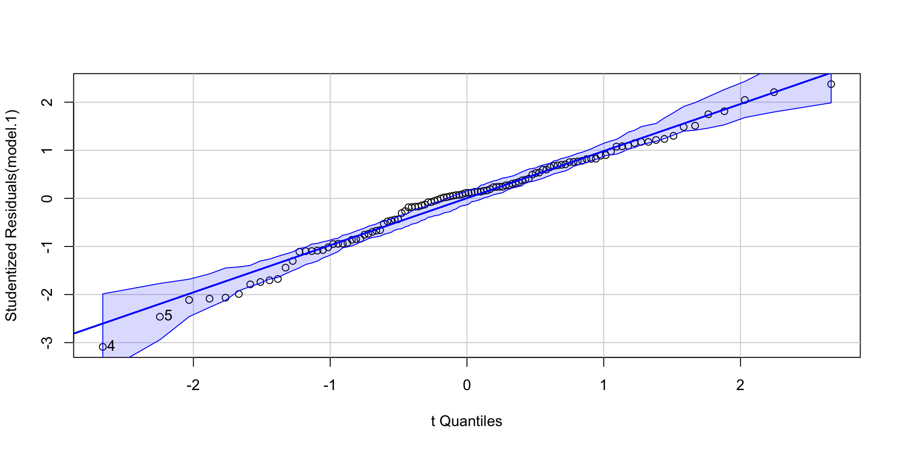

Assumptions
and Diagnostics
Today
- Assumptions of GLM regression models
- Diagnostics
- Screening your data
- Outliers
BLUE
Best Linear Unbiased Estimate of beta \((\beta)\)
- Unbiased
- Efficient
- Consistent
Assumptions of the regression model
- No measurement error
- Correctly specified form
- No omitted variables
- Homoscedasticity
- Independence among the residuals
- Normally distributed residuals
a_data <- read.csv("https://raw.githubusercontent.com/uopsych/psy612/master/data/anxiety.csv")
library(broom)
model.1 <- lm(Anxiety ~ Support, a_data)
aug_1<- augment(model.1)
aug_1# A tibble: 112 × 8
Anxiety Support .fitted .resid .hat .sigma .cooksd .std.resid
<dbl> <dbl> <dbl> <dbl> <dbl> <dbl> <dbl> <dbl>
1 0.698 17.0 4.20 -3.50 0.0650 2.08 0.103 -1.72
2 3.03 14.4 5.29 -2.26 0.0353 2.10 0.0220 -1.10
3 3.30 8.85 7.60 -4.30 0.00896 2.07 0.0191 -2.05
4 3.41 4.1 9.59 -6.17 0.0258 2.02 0.117 -2.98
5 3.59 6.43 8.61 -5.03 0.0130 2.06 0.0381 -2.41
6 4.22 11.4 6.54 -2.31 0.0150 2.10 0.00935 -1.11
7 4.36 6.79 8.46 -4.10 0.0118 2.07 0.0229 -1.96
8 5.08 11.2 6.62 -1.54 0.0141 2.11 0.00390 -0.739
9 5.38 5.33 9.07 -3.69 0.0179 2.08 0.0286 -1.77
10 5.59 8.91 7.58 -1.99 0.00898 2.10 0.00409 -0.950
# … with 102 more rowsResiduals
Residuals are your best diagnostic tool for assessing your regression model. Not only can they tell you if you’ve violated assumptions, but they can point to specific cases that contribute to the violations. This may help you to:
- Notice patterns, which may lead you to change your theory
- Remove problematic cases
- Improve your research design
Code
library(ggplot2)
ggplot(aug_1, aes(x = Support, y = Anxiety)) +
#geom_smooth(method = "lm", se = FALSE, color = "lightgrey") + # Plot regression slope
geom_segment(aes(xend = Support, yend = .fitted), alpha = .2) + # alpha to fade lines
geom_point() +
geom_point(aes(y = .fitted), shape = 1) +
scale_y_continuous(limits = c(-10, 15)) +
labs(caption = "One predictor: Anxiety ~ Support") +
theme_bw(base_size = 20)Code
model.2 <- lm(Anxiety ~ Support + Stress, a_data)
aug_2<- augment(model.2)
ggplot(aug_2, aes(x = Support, y = Anxiety)) +
geom_segment(aes(xend = Support, yend = .fitted), alpha = .2) + # alpha to fade lines
geom_point() +
geom_point(aes(y = .fitted, color = Stress)) +
scale_y_continuous(limits = c(-10, 15)) +
labs(caption = "Two predictor: Anxiety ~ Support + Stress") +
theme_bw(base_size = 20)We can add stress to the model to see how this changes
1) Measurement Error
No measurement error in our independent variables
How does measurement error affect our coefficient estimates?
How does measurement error affect our the standard errors of the coefficients?
How can we check this assumption?
2) Form
Assumption 2: Correctly specified form
3) Model
Assumption 3: Correctly specified model - This is especially important for multiple regression. - Two problems:

3) Model
Correctly specified model
Cohen and Cohen (1983) discuss several problems associated with the inclusion of covariates/multiple independent predictors in a model. Those problems were:
- Computational accuracy
- not a problem now, because computers
- Sampling stability (tolerance)
- Interpretation
3) Model
Correctly specified model: Tolerance
Recall that, computationally, including multiple predictors in your model requires adjusting for the overlap in these predictors.
\[\large se_{b} = \frac{s_{Y}}{s_{X}}\sqrt{\frac {1-R_{Y\hat{Y}}^2}{n-p-1}}\sqrt{\frac{1}{1-R_{12}^2}}\] (in a two-predictor regression)
Tolerance is:
\[\large 1-R_{12}^2\]
3) Model
Correctly specified model: Tolerance
If your two independent predictors are highly correlated, tolerance gets smaller.
- As tolerance gets smaller, the standard error gets larger. This is referred to as variance inflation. The variance inflation factor is an index to assess this problem.
\[\text{VIF} = \frac{1}{\text{Tolerance}} = \frac{1}{1-R^2_{12}}\]
3) Model
Correctly specified model: Tolerance
\[\text{VIF} = \frac{1}{\text{Tolerance}} = \frac{1}{1-R^2_{12}}\]
- As the standard error becomes larger, the confidence intervals around coefficients becomes larger. When confidence intervals around estimates are large, then we say the partial coefficient estimates are unstable.
3) Model
Tolerance
VIF is not bounded, but generally large numbers (greater than 5 or 10, based on who’s giving you the heuristic) indicates a problem.
The lesson from tolerance is that, as you add predictors to your model, it is best to select predictors that are not correlated with each other.
What about (3) Interpretation?
3) Model
Lynam et al (2006)
Main takeaways:
Partialling changes the meaning and interpretation of a variable.
Partialling only takes variance away from the reliable \((r_{XX})\) part of a measurement.
Nothing is a good substitute for good theory and reliable measurement.
Always present zero-order correlations.
3) Model
Endogeneity
- “Under control” and your coefficient is no longer interpretable
Endogeneity is when your your error term is associated with an IV.
- Typically when you leave out an important IV.
3) Model
Endogeneity
4) Homoscedasticity
Homoscedasticity is the general form of “homogeneity of variance.”
Homogeneity of variance
the variance of an outcome is the same across two (or more) groups
Levene’s test
Homoscedasticity
the variance of an outcome is the same across all levels of all continuous predictor variables
visual inspection of residuals by fitted values
4) Homoscedasticity
5) Independence among the errors
6) Normality of the errors
6) Normality of the errors
Regression assumptions
| Violated Regression Assumption | Coefficients | Standard Errors |
|---|---|---|
| 1. Measured without error | Biased | Biased |
| 2. Correctly specified form | Biased | Biased |
| 3. Correctly specified model | Biased | Biased |
| 4. Homoscedasticity | Biased | |
| 5. Independent Errors | Biased | |
| 6. Normality of the Errors | Biased |
How do we detect violations?
| Assumption | Detection |
|---|---|
| 1. Measured without error | Reliability |
| 2. Correctly specified form | Residuals against predicted |
| 3. Correctly specified model | Theory, endogeneity test |
| 4. Homoscedasticity | Residuals against predicted |
| 5. Independent Errors | Research Design |
| 6. Normality of the Errors | q-q plot or distribution |
Addressing violations
| Assumption | Fix |
|---|---|
| 1. No error | SEM, factor scores, more data, better design |
| 2. Correct form | Different model |
| 3. Correct model | ¯\_(ツ)_/¯ & specificity analyses |
| 4. Homoscedasticity | Bootstraps, WLS, transformations |
| 5. Independent Errors | Different analysis |
| 6. Normality | Additional IVs, different form |
Robustness
Regression models are considered robust meaning that even when you violate assumptions, you can still use the same models with some safety.
- E.g., t-tests are robust to the assumption of normality, because we can fall back on the central limit theorem.
Regression is robust to violations of some assumptions, primarily
- Homoscedasticity
- Normality of errors
Steps for screening
- Calculate univariate and bivariate descriptive stats
Check the class (factor or numeric) of the variable
Check the min and max
- make sure data were entered correctly
- look for ceiling or floor effects
Check for skew
Compare correlation matrices with pairwise and listwise deletion for bias in missingness.
Calculate reliability for your scales.
Steps for screening
- Plot univariate and bivariate distributions
Look for skew and outliers
Check correlation heat maps for expected and unexpected patterns in items
Steps for screening
- Test the assumptions of your regression model(s)
Calculate the VIF of each term (if you have two or more) to check for correctly specified models.
Graph residuals by predictors to check for Endogeneity.
Graph residuals by fitted values to check for homoscedasticity.
Graph residuals by ID number (or date, or another variable not in your model) to check for independence.
Graph the distribution of residuals or the Q-Q plot to check for normality.
Steps for screening
- Look for univariate or multivariate outliers…
Outliers
Broadly defined as atypical or highly influential data point(s)
Due to contamination (e.g. recording error) or accurate observation of a rare case
Univariate vs. Multivariate
How do we typically describe or identify outliers?
Outliers can be described in terms of three different metrics. Each metric conveys a sense of the magnitude of outliery-ness the case exhibits. However, some metrics also describe the degree to which your inferences will change:
- Leverage: How unusual is this case from the rest of the cases in terms of predictors?
- Distance: How distant is the observed case from the predicted value?
- Influence: How much the does regression coefficient change if case were removed?
Leverage
How far observed values for a case are from mean values on the set of IVs (centroid).
Not dependent on Y values
High leverage cases have greater potential to influence regression results
Leverage
One common metric for describing leverage is Mahalanobis Distance, which is the multidimensional extension of Euclidean distance where vectors are non-orthogonal. Given a set of variables, \(\mathbf{X}\) with means \(\mathbf{\mu}\) and covariance \(\Sigma\):
\[\large D^2 = (x - \mu)' \Sigma^{-1} (x - \mu)\]
Leverage
Stress Support
5.186800 8.662103 Stress Support
Stress 3.666732 3.387275
Support 3.387275 11.117402 [1] 7.018356383 3.450982875 0.152114395 3.430039030 0.497786142 0.684818200
[7] 0.894622274 0.841235044 1.571207529 1.163803554 1.487627724 2.210926292
[13] 4.958871676 6.150328698 1.405581944 0.323959017 2.180704901 0.193473431
[19] 0.695171983 0.434470685 0.975057529 2.280114631 2.817084857 2.291657383
[25] 1.109481925 1.271369892 0.474297103 1.232886329 1.267514020 6.372282461
[31] 0.097867684 0.164976621 0.478375134 0.161005330 0.031205001 2.390727186
[37] 0.240322002 0.625273896 0.128009095 5.086135237 0.600586116 1.016269608
[43] 0.874474157 0.554714390 5.295246878 0.075637423 0.064673007 2.745902872
[49] 4.115636193 2.206947562 1.562391554 1.834441352 2.020998475 0.130016287
[55] 6.347329813 4.385560065 7.759602824 8.364069009 7.582673268 3.029835908
[61] 5.211461774 2.057968154 3.160551380 0.001834182 2.253922227 3.934198774
[67] 2.825259760 1.833156958 1.037925494 1.685519144 0.604000828 0.305394239
[73] 4.595111351 0.383384683 0.587911431 2.515402578 1.210354678 0.474003950
[79] 0.176312512 4.843127672 8.139752237 0.554861204 2.203780589 0.964616115
[85] 0.070882936 0.126184081 0.150644509 0.724498979 0.560853186 2.298953623
[91] 4.873060491 0.086910574 1.034912462 1.273765587 2.921356194 0.327645193
[97] 3.388771645 2.094432757 1.953328189 0.016095060 1.096842285 1.981949445
[103] 1.562288194 0.897453325 0.613011029 1.082564195 1.133890667 2.858102258
[109] 3.713914882 0.172254465 0.704463366 2.912426663Distance
Distance is the distance from prediction, or how far a case’s observed value is from its predicted value
i.e., residual
In units of Y.
What might be problematic at looking at residuals in order to identify outliers?
Distance
Raw residuals come from a model that is influenced by the outliers, making it harder to detect the outliers in the first place. To avoid this issue, it is advisable to examine the deleted residuals.
This value represents the distance between the observed value from a predicted value that is calculated from a regression model based on all data except the case at hand
The leave-one-out procedure is often referred to as a “jack-knife” procedure.
Distance
- Standardized residuals: takes raw residuals and puts them in a standardized unit – this can be easier for determining cut-offs.
\[\large z_e = \frac{e_i}{\sqrt{MSE}}\]
Distance
Other residuals are available:
Studentized residuals: The MSE is only an estimate of error and, especially with small samples, may be off from the population value of error by a lot. Just like we use a t-distribution to adjust our estimate of the standard error (of the mean) when we have a small sample, we can adjust out precision of the standard error (of the regression equation).
\[\large r_i = \frac{e_i}{\sqrt{MSE}(1-h_i)}\]
where \(h_i\) is the ith element on the diagonal of the hat matrix, \(\mathbf{H} = \mathbf{X}(\mathbf{X'X})^{-1}\mathbf{X}'\). As N gets larger, the difference between studentized and standardized residuals will get smaller.
Distance
Warning: Some textbooks (and R packages) will use terms like “standardized” and “studentized” to refer to deleted residuals that have been put in standardization units; other books and packages will not. Sometimes they switch the terms and definitions around. The text should tell you what it does.

Influence
Influence refers to how much a regression equation would change if the extreme case (outlier) is removed.
- Influence = Leverage X Distance
Like distance, there are several metrics by which you might assess any case’s leverage. The most common are:
- Cook’s Distance (change in model fit)
- DFFITS (change in fitted value, standardized)
- DFBETAS (change in coefficient estimate)
Influence
DFFITS indexes how much the predicted value for a case changes if you remove the case from the equation.
DFBETAs index how much the estimate for a coefficient changes if you remove a case from the equation.
1 2 3 4 5 6
-0.6116366 -0.1834441 -0.2107932 -0.5705292 -0.2946893 -0.1502514 (Intercept) Support Stress
1 0.27619170 -0.023304031 -0.021991798
2 0.03807997 -0.010671215 0.007337832
3 -0.05317117 -0.003276263 0.008717073
4 -0.32312508 0.008746135 0.038199438
5 -0.13692490 0.007120538 0.006005067
6 0.02865937 -0.004930539 -0.001467911
Outliers
- Leverage – How unusual is this case from the rest of the cases in terms of predictors?
- Distance – How distant is the observed case from the predicted value?
- Influence – How much the does regression coefficient change if case were removed?
Consider each of these metrics in the context of research degrees of freedom. Do some of these metrics change the independence of successive inferential tests? How might this be problematic for Type I error?
What can you do to ensure your analysis is robust?
Recommendations
Analyze data with/without outliers and see how results change
If you throw out cases you must believe it is not representative of population of interest or have appropriate explanation
Don’t throw out data just to be “safe”. Data are hard to collect and outliers are expected!
Multicollinearity
Multicollinearity occurs when predictor variables are highly related to each other. - This can be a simple relationship, such as when X1 is strongly correlated with X2. This is easy to recognize, interpret, and correct for. - Sometimes multicollinearity is difficult to detect, such as when X1 is not strongly correlated with X2, X3, or X4, but the combination of the latter three is a strong predictor of X1.
Multicollinearity
Multicollinearity increases the standard errors of your slope coefficients.
\[\large se_{b} = \frac{s_{Y}}{s_{X}}\sqrt{\frac {1-R_{Y\hat{Y}}^2}{n-p-1}}\sqrt{\frac{1}{1-R_{12}^2}}\] - Perfect collinearity never happens. Like everything in statistics (except rejecting the null), it’s never a binary situation; there are degrees of multicollinearity. More multicollinearity = more problematic model.
Diagnosis
Multicollinearity can be diagnosed with tolerance.
Tolerance: \(1-R_{12}^2\)
Also look for models in which the coefficient of determination is large and the model is significant but the slope coefficients are small and non-significant.
Look for unstable slope coefficients (i.e., large standard errors)
Look for sign changes
Multicollinearity
Ways to address
Increase sample size
- Remember, with small samples, our estimates can be wildly off. Even if the true relationship between X1 and X2 is small, the sample correlation might be high because of random error.
Remove a variable from your model.
Composite or factor scores
- If variables are highly correlated because they index the same underlying construct, why not just use them to create a more precise measure of that construct?
Next time…
Causal models